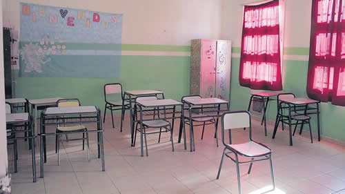

Real Chubut - Agencia de Noticias


Despidos por mail para vaciar la formación docente

El gobierno bonaerense dejó en jaque los cursos de capacitación a los que acceden los maestros de forma gratuita. Los trabajadores de los Equipos Técnicos Centrales de Formación Docente recibieron un correo electrónico que les anuncia el fin de su contrato. Son los encargados de planificar, diseñar y coordinar los programas que reciben los capacitadores.
Mientras los docentes reclaman una convocatoria paritaria para discutir la situación educativa, la gobernadora María Eugenia Vidal tomó una decisión que pone en riesgo los cursos de capacitación continua a los que acceden los maestros de forma gratuita. A través de un mail colectivo, la Dirección de Formación Continua provincial desarmó la planta de 36 trabajadores de los Equipos Técnicos Centrales de Formación Docente (ETC), los encargados de planificar, diseñar y coordinar los programas para las áreas y disciplinas de distintas modalidades y niveles que reciben los capacitadores. Para los docentes, la pérdida de puestos de trabajo representa, por un lado, el "desmantelamiento" de una estructura de enseñanza que funcionaba desde 2005 y, por el otro, un "camino hacia la mercantilización de las ofertas de formación".
Justo sobre el filo del comienzo de los cursos capacitación, los ETC recibieron el el 31 de enero un mail firmado por la nueva directora de formación continua en el que, sin una comunicación formal de por medio, se informaba su desvinculación de la estructura estatal. Allí informaban que no les renovarían el contrato, a pesar de que algunos se desempeñaban desde 2006. En diciembre, cuando fue el cambio de autoridades, los docentes temían que tomaran una decisión por el estilo. Sin embargo, no hubo ningún tipo de contacto por parte de la dirección hasta la llegada del mail.
"No hubo una comunicación formal. Fue solo un mensaje donde se nos reconoce nuestro trabajo, pero se explica que se decidió no recontratar. Por el momento no está claro si nos reemplazarán porque el mail no era claro", explicó a Página/12 Fabiana Menéndez, una de las despedidas. El problema de que no haya una renovación de puestos reside en que la planta entera de ETC quedaría vacía, con lo cual quedarían sin coordinación 500 Equipos Técnicos Regionales (ETR) que dependían de ellos en cada distrito.
Los Equipos Técnicos Centrales tenían a su cargo la responsabilidad de establecer un diálogo con las direcciones de los niveles para los cuales cada ETR capacita. Un ETC no sólo coordina la tarea de los ETR sino que también se encarga de escribir y producir los programas de los cursos, los guiones para que los capacitadores tengan la planificación clase por clase. "Más allá del temor, más allá de las personas, el miedo es que la estructura se desarme. Nosotros vamos y venimos", lamentó Menéndez.
Los ETC eran la pieza clave de la estructura que se creó en 2005 con el objetivo de dar acceso de forma gratuita a casi 100 mil maestros de todo el sistema -quienes cada vez más se ven empujados a acceder a otro tipo de capacitación privada- a cursos que les otorgan puntajes. Los docentes explicaron que, lejos de dirigir, su tarea implica construir colectivamente con sus ETR los cursos, teniendo en cuenta la diversidad y las características de cada lugar.
Un grupo de miembros de los Equipos Regionales se solidarizó con la situación de los Centrales y lanzó una convocatoria en Change con un mensaje hacia la nueva dirección, la que efectuó los despidos. "Es importante señalar que el ETC es una autoridad y un eslabón imprescindible para gestionar ese trabajo colaborativo debido a su formación académica y al ejercicio de un rol que facilita poner en valor lo que cada miembro de los equipos regionales proponen"
Desde Suteba, en tanto, adelantaron que llevarán su preocupación a la gobernadora en la próxima reunión paritaria, que vienen reclamando desde diciembre sin respuestas. Denunciaron el "vaciamiento" que está llevando adelante Vidal "en detrimento de más de 350 mil Trabajadores de la Educación, a quienes le asiste el derecho de capacitarse en forma pública, gratuita, permanente y en ejercicio según el Acuerdo Paritario que se concretó en la Resolución Nº 201/13 del Consejo Federal de Educación". "La medida es una política de descentralización de la formación continua, el mantenimiento del sistema formador público", advirtió a este diario Sandra Ramal, Secretaria Gremial de educación Superior de SUTEBA.
"Las políticas educativas del Gobierno Provincial avanzan hacia un Sistema Formador mercantilizado y, a la vez, recorta y ajusta el Sistema de Formación público. Se favorece así, con resoluciones unilaterales, a empresas privadas de capacitación", advirtió el gremio docente.
En medio de los despidos, también hay sin cubrir 105 puestos en Equipos Técnicos Regionales, a quienes ahora inclusive les cortaron los viáticos, imposibilitando aún más el acceso a los cursos de quienes están lejos de los Centros Educativos de Información e Investigación. "En el interior se van a quedar sin cursos porque van a dar capacitación a aquellos lugares a los que no se tienen que trasladar. Algunos lo van a a recibir a corto plazo, pero a largo plazo si no se renuevan los contratos no habría capacitación directamente", destacó Ramal, quien advirtió que este ajuste "es bestial" y se da "en el corazón del trabajo de los pibes".
Fuente: Pagina 12